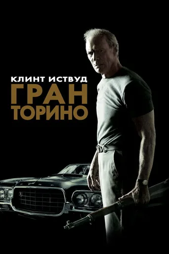

Гран Торино 2008
Вышедший на пенсию автомеханик Уолт Ковальски проводит дни, починяя что-то по дому, попивая пиво и раз в месяц заходя к парикмахеру. И хотя последним желанием его недавно почившей жены было совершение им исповеди, Уолту – ожесточившемуся ветерану Корейской войны, всегда держащему свою винтовку наготове, – признаваться в общем-то не в чем. Да и нет того, кому он доверял бы в той полной мере, в какой доверяет своей собаке Дейзи. Все те люди, коих он некогда называл своими соседями, либо переехали, либо ушли в мир иной, а на смену им пришли иммигранты, которых он откровенно презирает. Противясь буквально всему, во что упирается его взгляд, – покосившиеся карнизы, заросшие лужайки домов и лица иностранцев повсюду; бесцельно шатающиеся шайки подростков, состоящие из хмонгов, латиносов и афро-американцев, полагающих, что окрестный мир целиком принадлежит им одним; неоперившиеся чужаки, в которых оказалось превратились собственные дети и внуки, – Уолт просто неспешно проживает остаток своей жизни. До той самой ночи, когда кто-то попытается украсть его «Гран Торино»...
Открыть в каталогеДанные и постеры принадлежат их правообладателям. Этот продукт использует TMDB API, но не одобрен и не сертифицирован TMDB.